Редизайн интернет-магазина Бауцентр
Редизайн интернет-магазина строительных материалов: чёткая визуальная иерархия и фокус на товаре вместо визуального шума.
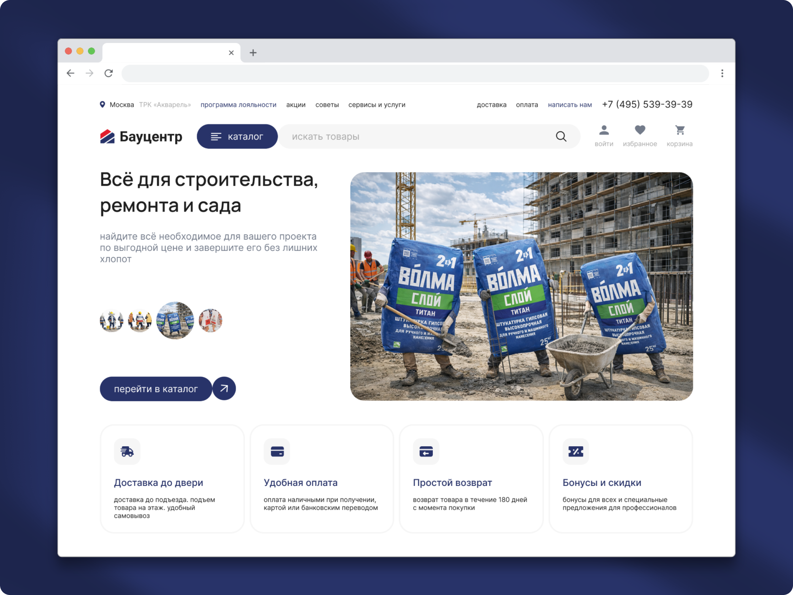
О проекте
Редизайн направлен на улучшение пользовательского опыта, упрощение поиска и выбора товаров, а также на формирование современного визуального образа бренда.
Цель: повысить конверсию в покупку за счёт улучшения структуры, навигации и визуальной иерархии.
Задачи:
- Проанализировать текущий сайт и выявить точки роста
- Упростить поиск и выбор товара
- Сделать интерфейс более современным, чистым и понятным
- Повысить удобство оформления заказа
Анализ
В ходе аудита текущего сайта были выявлены проблемы:
- Устаревший визуальный стиль
- Слишком много визуальных акцентов одновременно
- Непонятная и перегруженная навигация — пользователю сложно ориентироваться и быстро находить нужное
- Важные элементы (цена, кнопка покупки) теряются среди второстепенных
Главная проблема — отсутствие чёткой визуальной иерархии и фокуса на товаре.
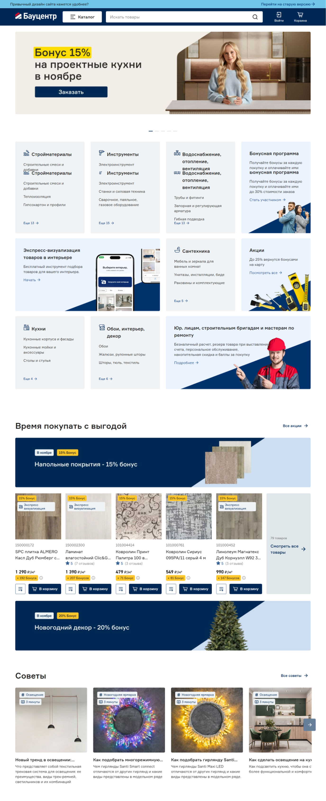
Исследование и подготовка
Анализ конкурентов
Изучены сайты крупных интернет-магазинов в категории DIY и ритейла.
- Выявлены лучшие практики: структура каталога, фильтрация, карточка товара
- Обнаружены типовые ошибки: перегруженность, чрезмерные баннеры, визуальный шум
- Принято решение сделать акцент на визуальной чистоте и фокусе на товаре
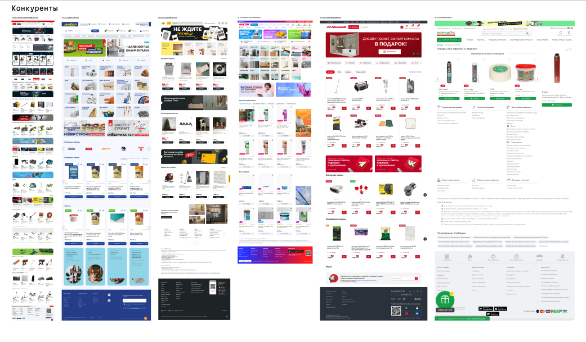
Мудборд и референсы
- Визуальные мудборды
- Ощущенческие референсы — спокойный, уверенный, современный стиль
- Примеры нестандартных, но аккуратных визуальных решений
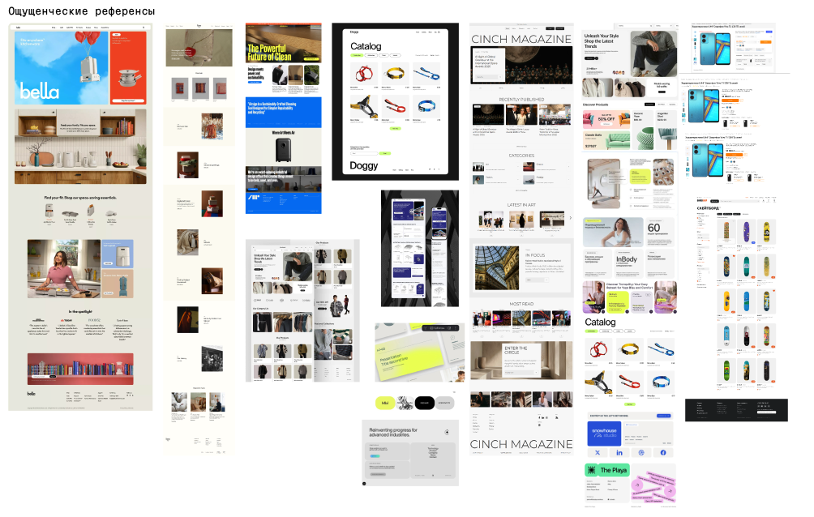
Решение
Главный экран полностью переработан:
- Сделан акцент на товар и цену
- Убраны лишние визуальные шумы
- Добавлены аккуратные нестандартные визуальные приёмы
- Выстроена чёткая иерархия блоков
Второстепенные блоки оформлены без заглавных букв, ключевые — с заглавных: это усиливает акцент и направляет внимание пользователя к главным зонам — товару, цене, действию.
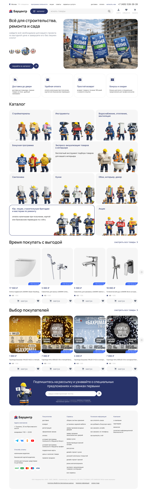
Навигация и структура
Переработана структура каталога — в нём стало легче ориентироваться.
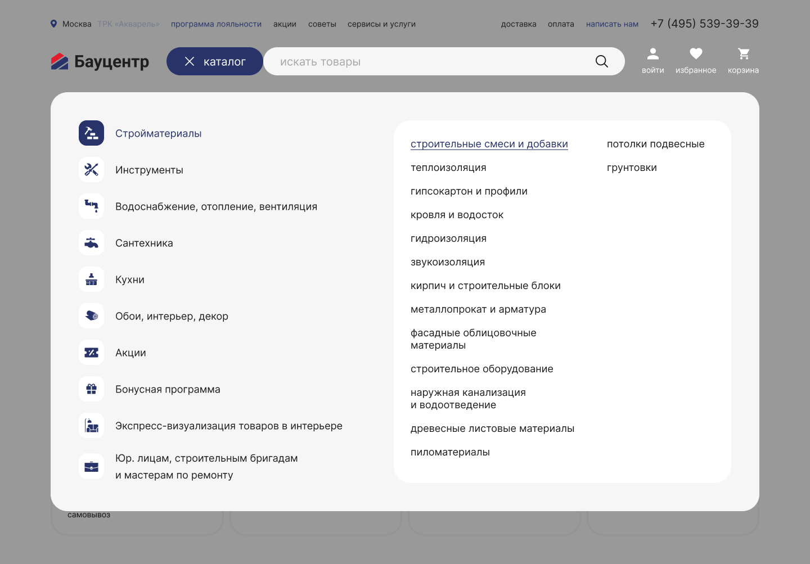
Проработана последовательность пользовательского пути:
Каталог → Фильтрация → Карточка товара → Корзина → Оформление заказа.
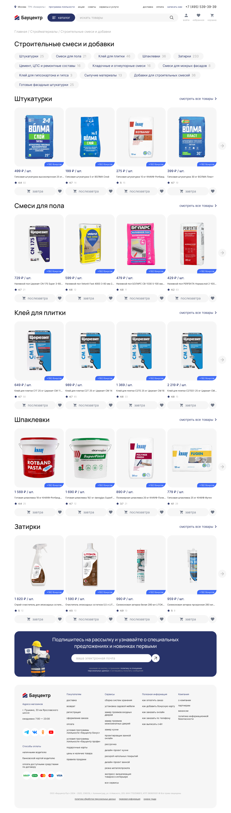
Фильтрация
Использована стандартная и понятная система фильтрации:
- Быстрый поиск по параметрам
- Логичная группировка характеристик
- Минимум лишних действий
Фильтры помогают пользователю быстро сузить выбор и принять решение.
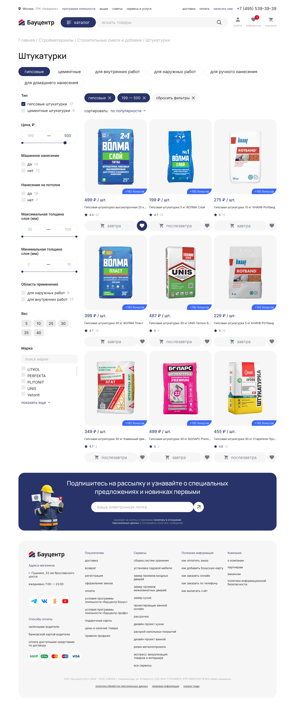
Карточка товара
Главный принцип — товар на первом плане:
- Крупное изображение
- Цена визуально выделена
- Кнопка «В корзину» заметна и доступна
- Похожие товары упрощают сравнение и выбор
Взгляд пользователя быстро проходит по важным зонам.
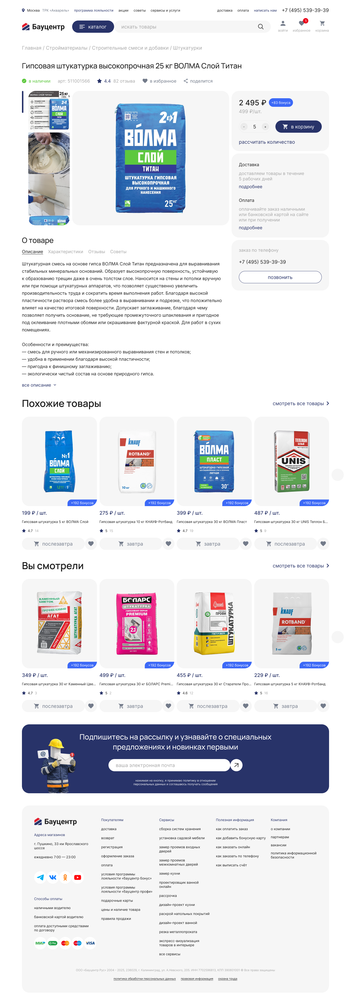
Корзина и оформление заказа
В корзине сохранён фокус на ключевых элементах:
- Цена визуально выделена
- Кнопка оформления заказа — главный акцент страницы
- Отображаются бонусы: начисление и возможность списания
Пользователь сразу видит итоговую сумму и выгоду, не отвлекаясь на второстепенные детали. Процесс оформления состоит из понятных шагов: ввод контактных данных, выбор способа получения, выбор способа оплаты. Доступно оформление без авторизации — тогда начисление и списание бонусов недоступны, об этом сообщает предупреждающая плашка.
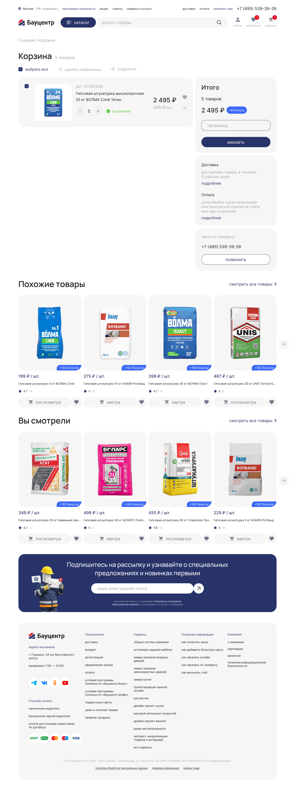
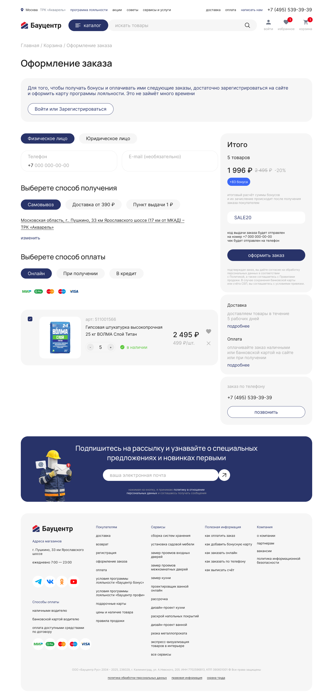
UI-kit
Был разработан UI-kit, включающий:
- Типографику
- Цветовую систему
- Компоненты (кнопки, карточки, фильтры, поля ввода)
- Правила отступов и иерархии
Это позволило обеспечить консистентность интерфейса и упростить масштабирование.
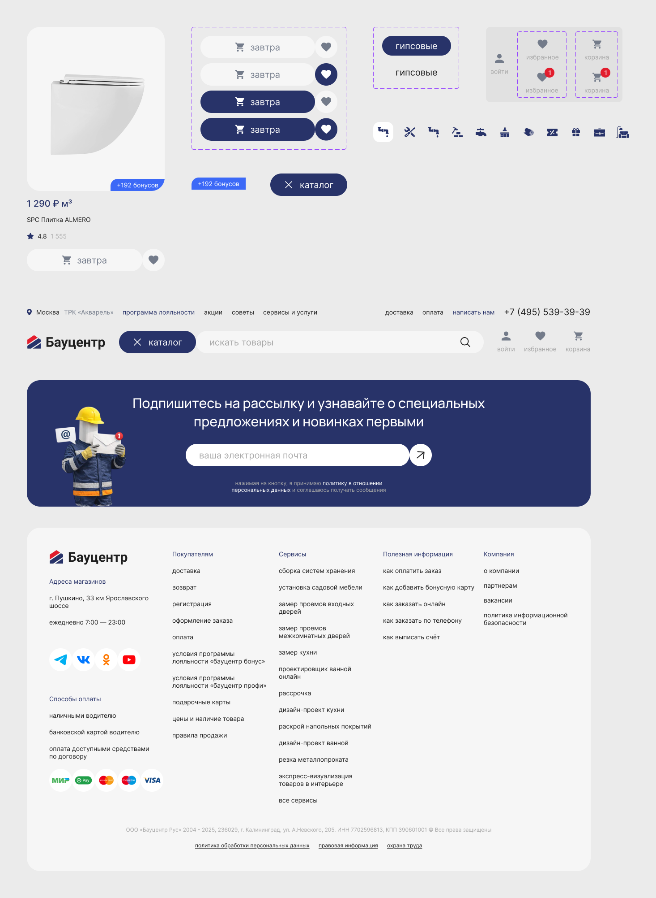
Результат
- Каталог, навигация и карточка товара переработаны
- Путь пользователя до покупки упрощён: каталог → фильтрация → карточка → корзина → оформление
- Разработан UI-kit с типографикой, цветом и компонентами
- Интерфейс стал чище и понятнее, ключевые акценты смещены на товар и цену. За счёт снижения визуального шума и упрощения выбора ожидается рост конверсии в покупку и улучшение пользовательского опыта.